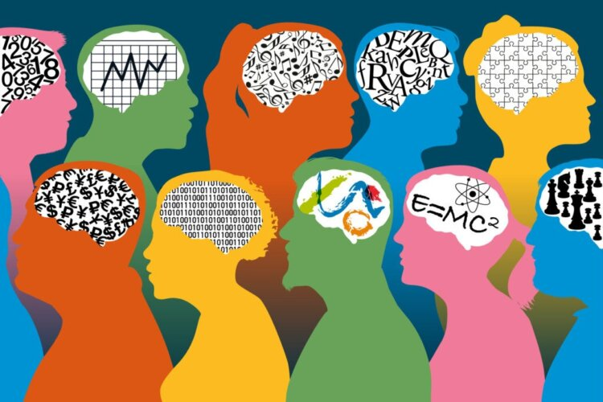

De la sémiotique à l'interopérabilité sémantiques des entreprises dans le monde numérique
Créé par Nicolas Figay et Pierre Moyen
Les divers thèmes abordés
- Le triangle sémiotique en contexte
- Catégorisation et classification
- Sémantique, Information et Connaissance
- Connotation, dénotation et perception contextuelle
- Intégrer philosophie de l'action, praxis et le pragmatisme
- Capture de la sémantique et Interopérabilité Sémantique
- Prise en compte de la perception contextuelle
- La communication dans les entreprises digitales
- A propos des ontologies
- Les ontologies dans le contexte du triange sémantique
- Illustration des langages formels standardisés avec ArchiMate et des protocoles métiers
- Le rôle de la normalisation
- Lien avec la babélisation
- Urbaniser et modéliser l'entreprise
- Freins à l'urbanisation
- Incommunicabilité entre les acteurs
Le triangle sémiotique en contexte

Motivation: définir plus en détail ce qu’est la sémantique afin de la lier aux problématique de l’interopérabilité et des standards informatiques
Le triangle sémiotique

Triangle sémiotique et sémantique
Etude du sens dans le language

Triangle sémiotique et sémantique
Les mots renvoient à des objets réels dans le monde

Triangle sémiotique et syntaxe
La syntactique (ou syntaxe) est l’étude des relations formelles entre les signes dans un système symbolique, sans se préoccuper de leur signification.

Le même terme (symbole) mais pas le même concept?

Triangle Sémiotique et pragmatique

Triangle Sémiotique et Rhétorique

Triangle Sémiotique, rhétorique et communication directe
Triangle Sémiotique, rhétorique et communication indirecte
Importance distinction communication directe et indirecte
pour
pragmatique
La pragmatique s'intéresse à la manière dont les énoncés sont
interprété
en fonction du contexte et des intentions sous-jacentes.
En communication directe, la compréhension est relativement simple puisque le message est explicite.
En revanche, la communication indirecte introduit une couche
supplémentaire de complexité:
le récepteur doit inférer l'intention à partir des éléments
contextuels, des relations entre les interlocuteurs, et des conventions sociales
Exemple en milieu professionnel
Dans un cadre professionnel, la communication directe peut être utilisée pour donner des instructions précises, tandis que la communication indirecte peut servir à éviter les conflits ou à naviguer dans des relations hiérarchiques complexes.
En communication directe, la compréhension est relativement simple puisque le message est explicite.
Par exemple, un supérieur pourrait dire « Je me demande si ce projet avance comme prévu » au
lieu de dire directement « Vous êtes en retard sur ce projet »,
laissant ainsi au subordonné l'interprétation de la demande d'action.
Impact de l’usage du numérique
L'usage du numérique renforce la communication indirecte en raison des limitations imposées par l'absence de signaux non verbaux et par la nature asynchrone des échanges.
En communication directe, la compréhension est relativement simple puisque le message est explicite.
Cela fait de la pragmatique une dimension essentielle de la communication numérique, car elle aide à décoder l’intention derrière les messages textuels et à gérer les échanges dans des environnements où les interactions indirectes sont la norme.
Le lien entre le triangle sémiotique et la sémantique est donc fondamental.
- Le triangle sémiotique illustre comment le langage représente la réalité à travers une structure symbolique.
- La sémantique est l’étude de cette structure, en analysant comment les mots (symboles) sont associés à des concepts (sens) et comment ils réfèrent à des objets réels ou imaginaires (référents) en fonction du contexte et de l’usage.
- Pragmatique et rhétorique fournissent des éléments de contextes souvent implicites qui contribuent à choisir le sens des symboles (désambiguïsation) dans un contexte autre que lexical/sémantique (place d’un mot dans une phrase ou d’un symbole dans un diagramme)
- Cela fait de la pragmatique une dimension essentielle de la communication numérique, car elle aide à décoder l’intention derrière les messages textuels et à gérer les échanges dans des environnements où les interactions indirectes sont la norme.
Nous allons maintenant explorer les notions de catégorisation et de classification.
Catégorisation et classification

Les termes "catégorisation" et "classification" sont souvent utilisés de manière interchangeable, mais ils ont des significations distinctes, notamment dans des contextes spécifiques tels que la linguistique, la philosophie et la science de l'information.

Catégorisation: Processus de regroupement d'entités en fonction de caractéristiques partagées ou de similitudes conceptuelles.
Classification: Organisation systématique d'éléments en groupes hiérarchiques prédéfinis basés sur des critères.
Lien catégorisation et triangle sémantique.

La catégorisation opère principalement entre concepts et
référents.
Elle nous aide à organiser le monde en catégories mentales compréhensibles
basées sur nos expériences avec des objets réels.
Par exemple, en rencontrant un chien,
nous le catégorisons mentalement en fonction des traits qu'il partage avec d'autres chiens.
Lien classification et triangle sémantique.
La classification est donc un processus plus rigide et structuré que la
catégorisation.
Elle formalise la façon dont les objets (référents) sont regroupés en
concepts et garantit que ces regroupements suivent des critères spécifiques, souvent basés sur
une base scientifique ou logique.
Cela est particulièrement important dans des domaines
comme la biologie, où le système de classification est bien défini et globalement compris.
Interaction avec le Monde Ouvert et les Contextes Interdisciplinaires
Lorsqu'on considère des scénarios de monde ouvert (comme la combinaison
de plusieurs disciplines ou systèmes de connaissances),
le triangle sémantique devient un
outil utile pour comprendre comment la classification et la catégorisation pourraient différer
ou s'aligner en fonction des domaines ou des disciplines.
Interaction avec le Monde Ouvert et les Contextes
Interdisciplinaires
Exemple
Un chien est il vu de la même manière par un biologiste et par un professionel de la santé le considérant comme animal de compagnie?
Conclusion: une perspective combinée
Le triangle sémantique aide à illustrer comment la classification et la catégorisation fonctionnent en reliant des symboles, des concepts et des référents.
- Classification: relation entre concepts et référents formalisée et structurée, symboles représentant des concepts standardisés et bien définis.
- Catégorisation: relation plus flexible et basée sur des caractéristiques partagées qui peuvent varier à travers les contextes.
Dans un monde ouvert où plusieurs classifications doivent être combinées, le processus implique de créer des correspondances et des alignements entre différents concepts et référents, garantissant la communication interdisciplinaire tout en maintenant l'intégrité de chaque système de classification. Cela pourrait impliquer des efforts de méta-classification ou d'interopérabilité sémantique.
Monde ouvert avec multiples classifications

Cartographie et alignement

- Cartographie ontologique: identifications des liens
- Alignement ontologique: formalisation des équivalences et subsomptions
- Intégration ontologique: plusieurs ontologies dans un cadre cohérent
S'agit il toujours de classification ou de catégorisation?

- Communication interdisciplinaire: compréhension entre domaines et disciplines
- Cartographe des classes ou catégories: formalisation des liens logiques/sémantiques entres domaines et disciplines
- Harmonisation: combinaisons harmonieuses
Ou bien s'agit il encore d'autre chose?

- Fédération ontologique: cadre pour harmoniser sans intégrer
- Interopérability sémantique: capacité à échanger et comprendre malgré différecences de structure ou de sémantique
- Meta classification: cadre de niveau supérieure
Un monde ouvert avec de multiples classifications
- Conception ontologique: créer les mises en correspondance
- Raisonneur ontologique: pouvoir utiliser des raisonneurs sémantique
- Cader de méta-ontologie: developer des cadres
En conclusion
- Dans un scénario de monde ouvert, la combinaison de multiples classifications pour la communication interdisciplinaire va au-delà de la simple classification ou catégorisation.
- Cela nécessite une approche qui intègre la cartographie ontologique, l'alignement et l'interopérabilité sémantique.
- Ce processus peut être considéré comme une forme de méta-classification ou de fédération ontologique, qui fournit une manière structurée de permettre une compréhension interdisciplinaire tout en maintenant l'intégrité des systèmes de classification individuels.
Sémantique, Information et Connaissance

Connotation dénotation et perception contextuelle
Intégrer philosophie de l'action, praxis et pragmatisme

Capture de la sémantique et
Interopérabilité Sémantique

Prise en compte de la perception contextuelle
La communication dans les entreprises digitales
A propos des ontologies

Les ontologies dans le contexte du triangle sémantique
Illustration des langages formels standardisés avec ArchiMate et des protocoles métiers

Le rôle de la normalisation

Lien avec la babélisation

Urbaniser et modéliser l'entreprise
Freins à l'urbanisation
Incommunicabilité entre les acteurs